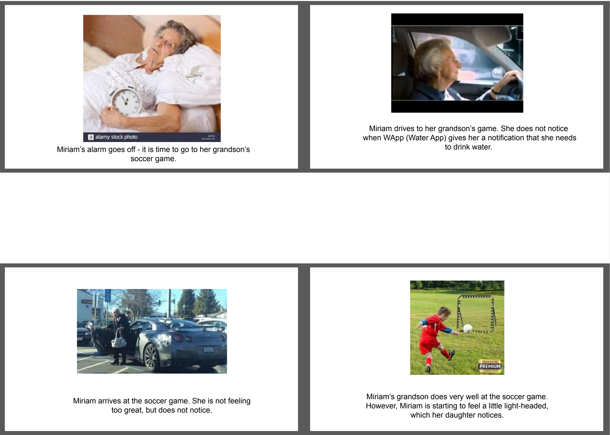
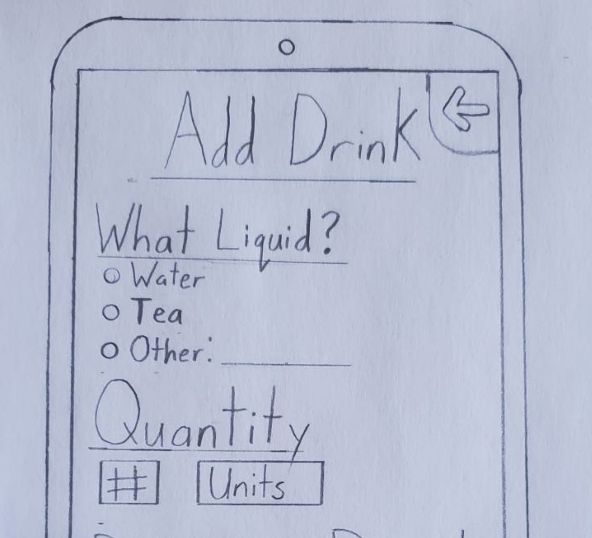
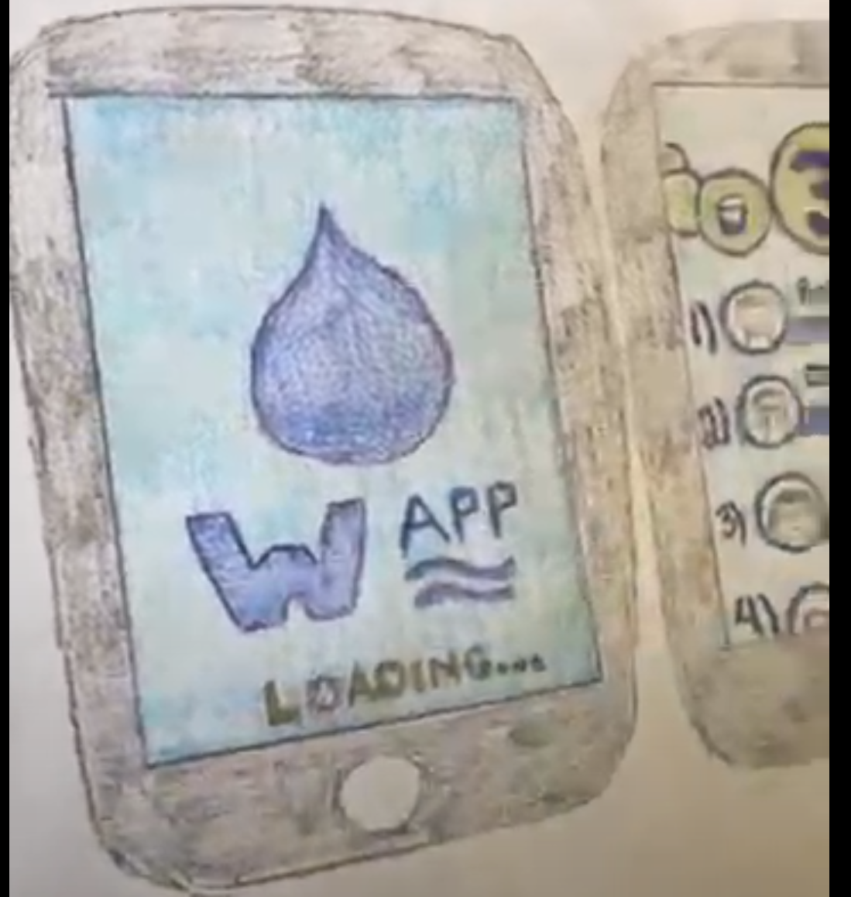
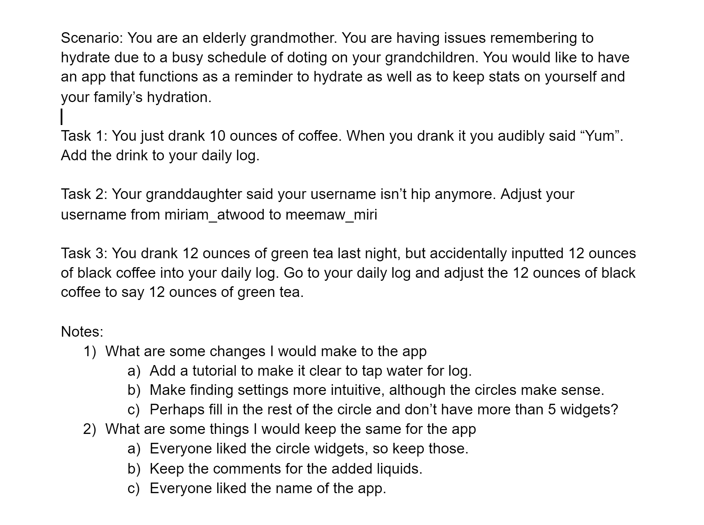
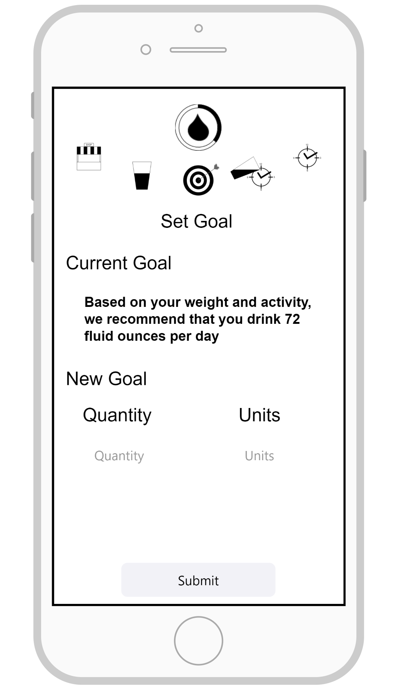
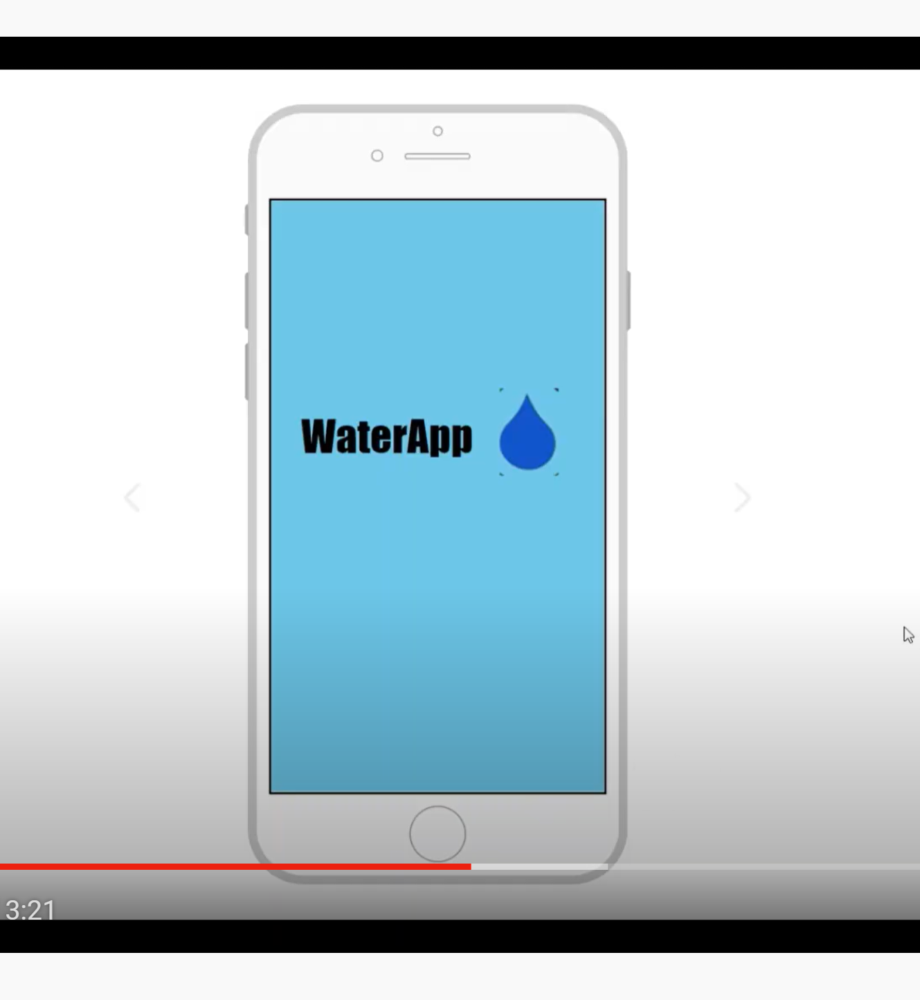

Problem Statement: Dehydration

Our users are not properly hydrated, which can lead to serious complications including heatstroke, heat injuries, or fatigue. Our solution should provide a way of keeping these individuals hydrated.
Affinity Diagram: Dehydration

My team and I developed an affinity board for an app designed around the concept of drinking water to prevent dehydration.
Personna: Miriam Atwood

A personna of a typical water drinker.
StoryBoard: Miriam Atwood
A comic strip illustrating the need for an app that reminds you to drink water.
Sketch: Water App
A sketch of potential app solutions for dehydration in users.
Paper Prototype: Water App
A functional prototype on paper which we can use to ideate.
Usability Testing: Water App
A scenario and tasks and the outcome of usability test.
Low-Fi Prototype: Water App
A low-fi representation of the water app.
High-Fi Prototype: Water App

A high fidelity prototype of the water app.
High-Fi Prototype Presentation: Water App
A final presentation of our water app.